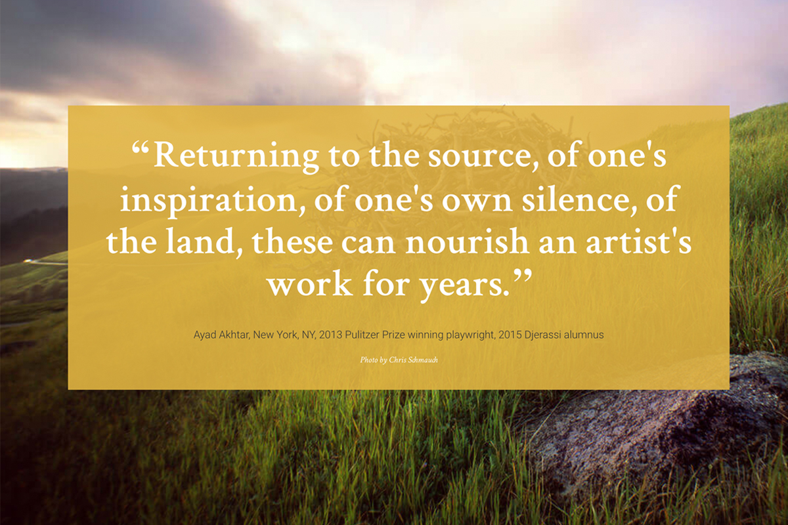
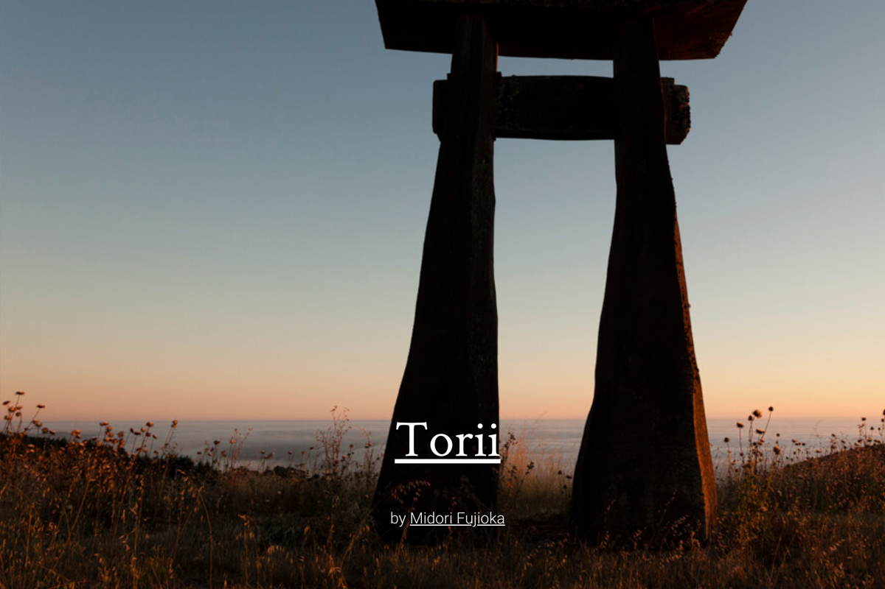
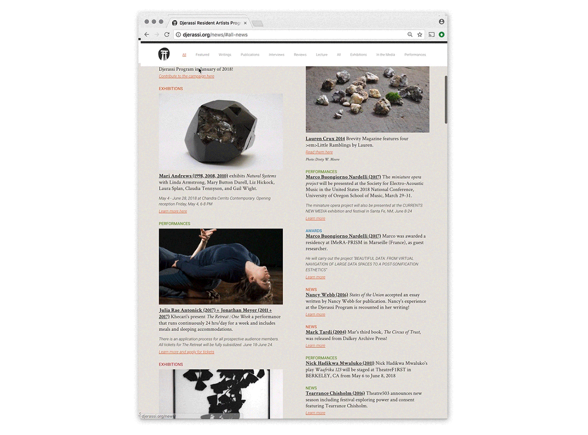
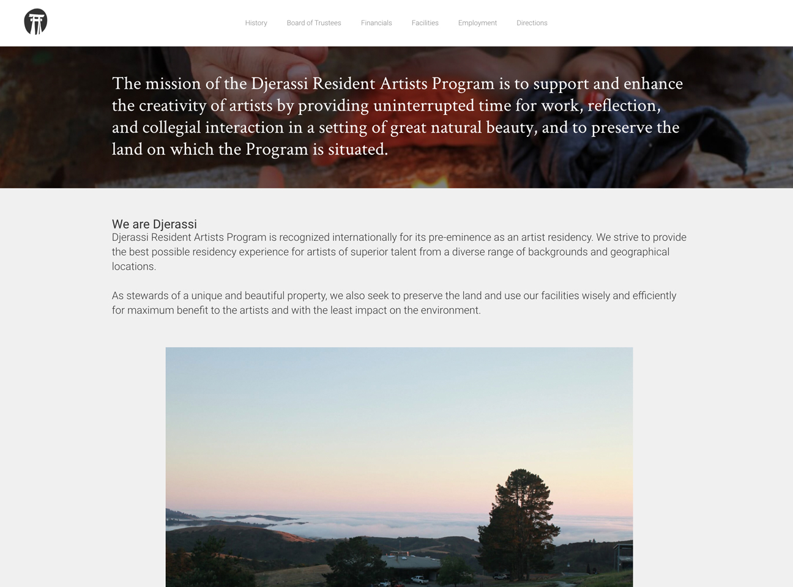

Djerassi Web Design
Web designs for Djerassi, an internationally recognized resident artist program.
As an intern at MendeDesign I helped the team develop the new visual language and web identity for Djerassi. It was a pleasure to understand the importance of land and art especially as it impacts the resident artists on the Djerassi grounds.

A web article on the Torii sculpture at Djerassi.
Djerassi gives time and space to artists and it was inspiring to be able to study some of it's history as the organization and it's resident artists have impacted the fine arts world in many more ways than one.

The development of the website started from dealing with wireframes and user interaction to building fully annotated documents for web engineers. It was challenging but rewarding to be able to work through responsive design ideations. Most important, was learning firsthand, the value of telling important narratives through use of digital landscapes.
A scroll through the news section.
